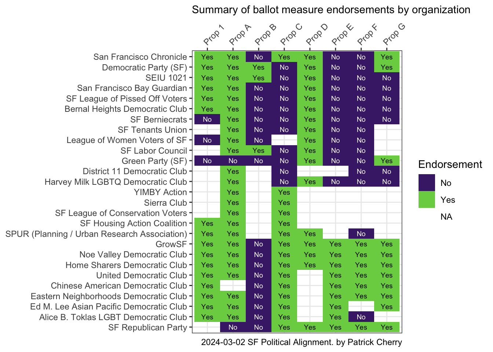
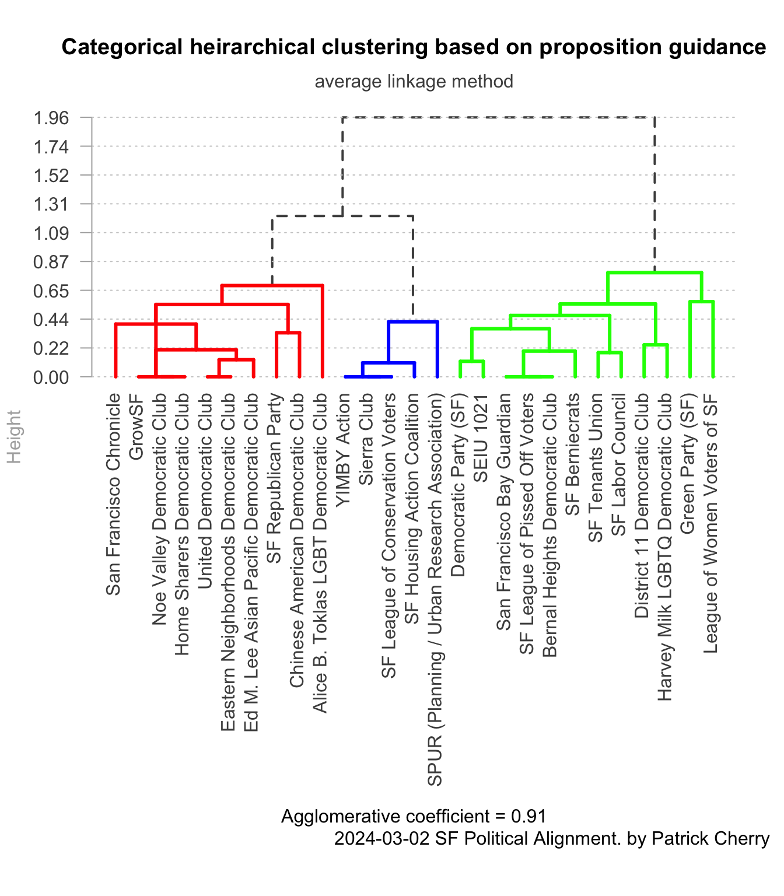
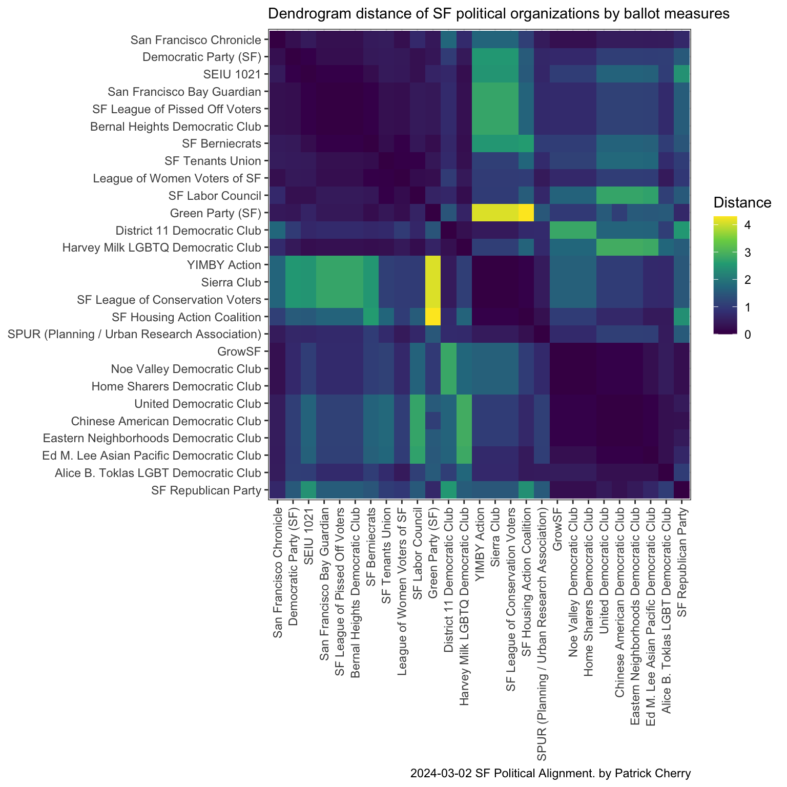

| Prop | Title | Description |
|---|---|---|
| Prop 1 | Mental health care reform including bond measure to fund treatment beds | Proposition 1 would shift the way California spends tax revenue from the Mental Health Services Act to cover addiction treatment and housing. It would also authorize $6.38 billion in bond funding to build residential mental health treatment facilities. Its part of Gov. Gavin Newsoms plan to get people with severe mental illness who are languishing on the streets into housing and treatment. |
| Prop A | Affordable Housing Bonds | SAN FRANCISCO AFFORDABLE HOUSING BONDS. To construct, develop, acquire, and/or rehabilitate housing, including workforce housing and senior housing, that will be affordable to households ranging from extremely low-income to moderate-income households; shall the City and County of San Francisco issue $300,000,000 in general obligation bonds, subject to independent citizen oversight and regular audits, with a duration of up to 30 years from the time of issuance, an estimated average tax rate of $0.0057/$100 of assessed property value, and projected average annual revenues of $25,000,000? |
| Prop B | Police Officer Staffing Levels Conditioned on Future Tax Funding | Shall the City amend the Charter to set minimum police officer staffing levels, require the City to budget enough money to pay the number of police officers employed in the previous year, allow the Police Department to introduce amendments to its budget, and set aside funds to pay for police recruitment, all for at least five years, but all if and only if the voters later adopt a new tax or amend an existing tax to fund these requirements? |
| Prop C | Real Estate Transfer Tax Exemption and Office Space Allocation | Shall the City exempt from the real estate transfer tax the first time a property is transferred after being converted from a commercial to residential use, have authority to amend the transfer tax without voter approval but not to increase it, and increase the annual limit on office space available for development by including office space that has been converted to a different use or demolished? |
| Prop D | Changes to Local Ethics Laws | Shall the City amend its ethics laws to further restrict the gifts City employees and officers may accept, expand the definition of conduct by City employees, officers and others that those laws prohibit as bribery, require additional reporting of gifts to City departments, create a uniform set of rules for nonwork activities of City employees and officers instead of rules by each department, create additional penalties for some ethics violations, require ethics training for additional City employees, and change the requirements for making future amendments to some ethics laws? |
| Prop E | Police Department Policies and Procedures | Shall the City allow the Police Department to hold community meetings before the Police Commission can change policing policies, reduce recordkeeping and reporting requirements for police officers, set new policies for police officers to report use-of-force incidents and to engage in vehicle pursuits, authorize the Police Department to use drones and install public surveillance cameras without further approval, and authorize the Police Department to use new surveillance technology unless the Board of Supervisors disapproves? |
| Prop F | Illegal Substance Dependence Screening and Treatment for Recipients of City Public Assistance | Shall the City require single adults age 65 and under with no dependent children who receive City public assistance benefits and whom the City reasonably suspects are dependent on illegal drugs to participate in screening, evaluation and treatment for drug dependency for those adults to be eligible for most of those benefits? |
| Prop G | Offering Algebra 1 to Eighth Graders | Shall it be City policy to encourage the San Francisco Unified School District to offer Algebra 1 to students by their eighth-grade year and to support the School Districts development of its math curriculum? |

Introduction
The saying goes “all politics are local,” and San Francisco is no exception.
San Francisco (and much of the Bay Area) has a curious political idiosyncrasy where brand-name Republican candidates and issues get so little traction among voters so as to be considered irrelevant. Yet, many republican ideals and beliefs do receive substantial support from locals.
This dynamic causes practically republican organizations to outwardly re-code and re-brand as something—anything—other than GOP. Popular self-descriptions include Moderate or middle-of-the-road Democrat. However, this analysis is motivated by ignoring these pretenses and looking exclusively at indicated issue recommendations / endorsements, and understanding how similar vs. how different each political organization is acting (a behaviorist / empirical approach).
Notes on approach
The website sfendorsements.com has collected and cataloged many of the city’s politically active groups’ (often Political Action Committees, or PACs) positions on ballot measures and election races for local positions. I hypothesize that these can be used to deduce the true alignment of these organizations.
Peter Xu make the code available, and has has previously made google sheets available for the endorsement data, but those are for 2022.
For this analysis, I will scrape the 2024 data, tidy it up, and analyze it.
Import and tidy data
Great, the data are now tidy, where each row is an observation (a political group), and each column is a variable (race / measure).
What are the propositions?
Edit after initial publication
Warning
March 3, 2024 2:15 PM local time
It has come to my attention that the scraped data were not 100% complete. The SF Chronicle has posted some endorsements on Ballot Measures E and F that were not included in this analysis. Thanks to Scott for noticing this. As of this moment, I have manually verified and added these to the table.
Analyze organizations by ballot measures
Who is recommending what?

Visually, we can see from this plot that there is significant variation across political organizations on endorsements for props C, E, F, G, and to a lesser extent B; whereas ballot measures 1, A, and D show less variation among political organizations. Also, interestingly, some organizations that offer endorsements did not endorse any position for some (or even most) propositions on the March 5 ballot.
However, for the above plot, the variation is easier to see than if the political organizations were sorted alphabetically because I cheated: I pre-sorted these based on their clustering order. So let’s explore the clustering result.
Nominal clustering
Clustering is typically a quantitative method, so special accommodations have to be taken for clustering nominal / factor data like these (where there are discrete values that do not have an order over one another). Luckily, we can use the nomclust package (paper), which handles the details as a purpose-built package for hierarchical clustering of nominal (categorical) variables.

Note
The underlying data have been updated since the original publication. The clustering is meaningfully different than previously displayed.
Generally speaking, the agglomerative coefficient of a clustering analysis describes the strength of the clustering structure that has been obtained by group average linkage. The coefficient takes values from 0 to 1, and is calculated as the mean of the normalized lengths at which the clusters are formed, e.g. the uniformity lengths displayed on the dendrogram. The more evenly and gradually the categories get broken down into different clusters, the closer to 1 the agglomerative coefficient will be.
Very tellingly, we see three broad clusters:
- On the left (in red), the fist cluster is the largest cluster (in terms of number of organizations). It contains some heavy hitters, like the San Francisco Chronicle, the Harvey Milk LGBTQ Democratic Club, and the San Francisco Democratic Party.
- Next, in the middle (in green), this cluster is defined by SPUR and the YIMBY Action / Sierra Club / SF League of Conservation Voters (the latter three having identical ballot measure endorsements).
- On the right (in blue) is the cluster defined by the SF Republican Party. It also contains many low-distance neighborhood Democratic Clubs, and GrowSF, a nominally non-partisan and well-funded local 501(c)(4) political advocacy group.
Political organization distance heat map
I can also make a heat map of the clustering distance, or dissimilarity.

The heat map shows darker, purple-er coloring for pairs of organizations whose set of endorsements are more similar, and lighter, yellow-er colors for organizations with very different endorsements.
Political organization distance table
Some notable large-distance pairs jump out, like:
- Green Party (SF) vs SF Housing Action Coalition (distance = 4.3)
- The Green Party (SF) versus the middle cluster (Sierra Club, YIMBY Action, SF League of Conservation Voters) (distance = 4.11)
- Harvey Milk LGBTQ Democratic Club vs Chinese American Democratic Club and the United Democratic Club (distance = 2.89)
- SF Labor Council vs Chinese American Democratic Club (distance = 2.75)
The least-distant org to the SF Republican Party (aside from itself) is GrowSF (distance = 0.238)
Conclusions
We can see from a reasonably well-fitting categorical clustering model that many political organizations have high similarity with the SF Republican Party’s positions on ballot measures, despite having “Democratic” in their name. This result supports the idea that an empirical approach can reveal more about the character of an organization that the words in its name.